From first charge to a clean session — set up, dial in the heat, and enjoy your ENSŌ. No charcoal, no ash, no open flame.
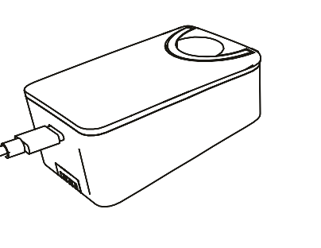
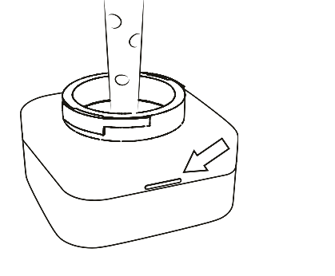
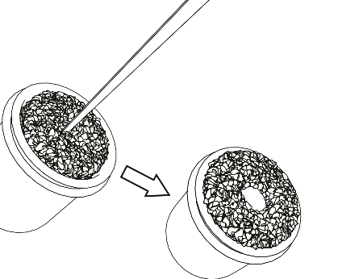
Make sure the battery is fully charged before you begin. A full charge takes about 1 hour 45 minutes over USB-C — use a 30W PD charger (minimum) for a steady top-up, and watch the four LEDs climb to full.
Thermocap and heating chamber up top; the thermodial and LED indicator on the body; vaporhose, watershield, dip tube and the glass water tank below. The leather strap and magnetic mouthpiece finish the ENSŌ.
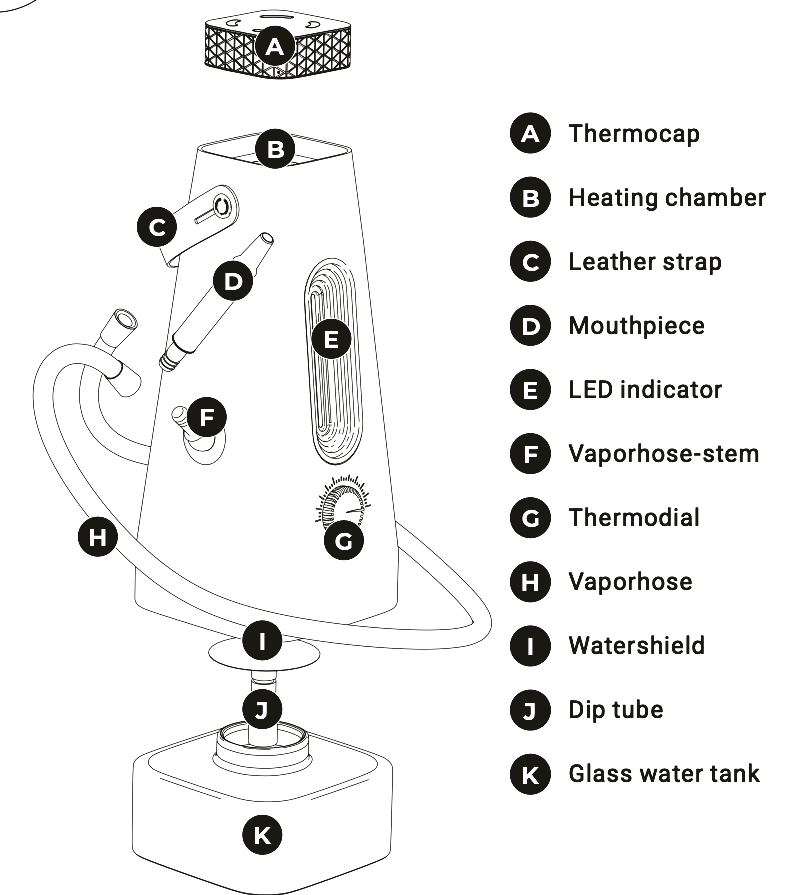
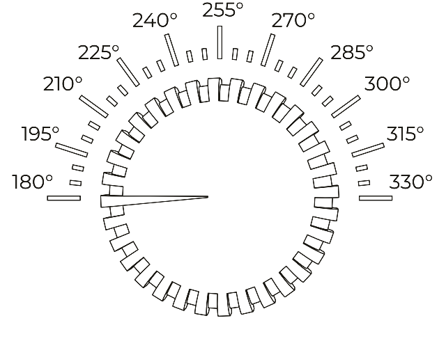
The thermodial spans 180–330 °C, each gradation a 5° step. Start low at 180° and let it heat for 5–8 minutes. If the vapor is light, raise the temperature 15–30° at a time and give each change 30–60 seconds to take effect.
ENSŌ's heating algorithm regulates the temperature, with a 70°C+ boost during the 5-minute pre-heat.
Linear power to counterbalance frequent draws, and no extra heat in the pre-heat. The LED turns green.
The thermodial locks — the set temperature stays fixed and turning the dial does nothing.
Find what's happening below and we'll walk you through it step by step. Most things are a quick fix — and if not, we'll point you to support.
No matches — try a different word, or contact support below.